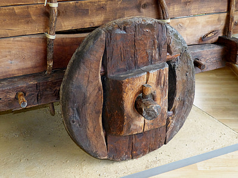

[轮子]
关于重复造轮子是否必要，中庸点来说便是仁者见仁智者见智，这有点有点玄之又玄的味道。
有人说必要，有人说不必要，于是就有人无所适从了。
从粗浅的商业角度来说，重复造轮子是十分不必要的，作为赶场者，要的是及时，如果赶不上趟那日子便难过了，我想稍有阅历的人都是能理解的。
然而从个人技能的学习提升拓展等角度来说，重复造轮子却是十分必要的。
造轮子并不单纯是为了轮子本身，也许我们在造轮子的过程中，能更好的理解为什么木头的比石头的轻便耐用？为什么钢铁的锻造技术已经纯火炉青了还要再包上一层塑胶做的胎？或许我们最终没能成为造轮子的专家，但是可能我们对相关的材料学有了更多的了解和兴趣，从而成为另一个领域的专家，谁知道呢？人不应该过早的定义自己。
有广度才能触类旁通，有深度才能一目了然。比如，互联网IT领域的开发，这个行业分有前端后端，其实前端后端的划分是为了更好的进行流水线式的生产，无论前端后端都只是流水线上的一员，但是不可否认的是：懂前端的后端会是更好的后端，懂后端的前端也会是更好的前端，而更好的也将会是更有竞争力的，这便是知识广度对工作的直接效用，没有广度将难以深入，没有深度将难以广开，如果你也是或将是互联网IT领域的开发从业者，不要局限于所谓的前端和后端，就算无助于对流水线之外的向往，至少工作上将会通透轻松很多。
说回造轮子的事，对个人来说，闲来造个轮子其实是有益无害的，诚如上文的离题之言，它能增加你知识面的深度和广度，继而拓展你可想象的空间。人的想象从来都是有根有据的，我想愿意学习并思考的人多半都不会否认这一点。我们的想象从来都没有能超脱出我们的认知范围，比如，我们要熟悉计算机之间的交互才敢去想象分布式计算，我们要熟悉各客户端的差异也才敢去想象一个通用的UI……等等，广度和深度不会冲突而只会相互成全，我们应该试着去做到融会贯通，而最行之有效的方法便是静下心来造个轮子。
我们不需要能造出创新纪元的轮子，我们的轮子可以很锉。
我们不需要能造出可重新定义轮子的轮子，我们的轮子可以很糙。
……
轮子不只是轮子而已，如果喜欢的话，还是可以造上一个的，而且我们应该自知，我们其实一直在重复着造轮子的事。
如果你还在纠结于是否有必要去重复造轮子的话，那不妨跟着我造个轮子先，至少能胜过无可措手的观望。
本文是前端系列的开篇，以重复造轮子做为引子，用本人的一个javascript类库向初入门的前端小伙伴分享一下我对前端开发的积累，要求熟悉基础的html和css，熟悉javascript语法，该前端系列包含基础知识：节点的选择与过滤，事件维护(绑定及解除及触屏端的点击模拟)，模块拖动，基础动效(位置及尺寸的过渡等)， 链式Ajax操作，表单操作辅助，对话框模拟，日期时间输入辅助等。